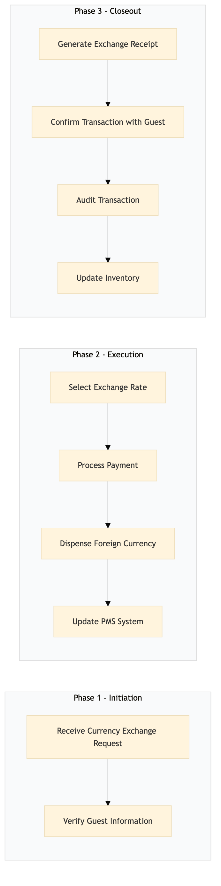

| Role | Steps |
|---|---|
| Front Desk Agent | 1.1 1.2 2.1 2.2 2.3 2.4 3.1 3.2 |
| Revenue Manager | 3.3 |
| Executive Housekeeper | 3.4 |
| Step | Name | Role | System | Input | Output | KPI | Dec? | Exc? | Pain Point / Risk |
|---|---|---|---|---|---|---|---|---|---|
| 1.1 | Receive Currency Exchange Request | Front Desk Agent | Oracle OPERA Cloud | Guest request | Exchange rate quote | Less than 2 minutes to provide the quote | N | Y | Handling multiple currency exchange requests simultaneously |
| 1.2 | Verify Guest Information | Front Desk Agent | Oracle OPERA Cloud | Guest identification | Verified guest information | Less than 1 minute to verify | N | Y | Incorrect or incomplete guest information |
| 2.1 | Select Exchange Rate | Front Desk Agent | Oracle OPERA Cloud | Exchange rate quote | Selected exchange rate | Less than 30 seconds to select | N | Y | Outdated or inaccurate exchange rates |
| 2.2 | Process Payment | Front Desk Agent | Oracle OPERA Cloud, Oracle MICROS Simphony | Payment details | Processed payment receipt | Less than 1 minute to process | N | Y | Handling multiple payment methods |
| 2.3 | Dispense Foreign Currency | Front Desk Agent | Oracle OPERA Cloud | Selected exchange rate and processed payment | Foreign currency dispensed to guest | Less than 1 minute to dispense | N | Y | Insufficient foreign currency stock |
| 2.4 | Update PMS System | Front Desk Agent | Oracle OPERA Cloud | Transaction details | Updated guest ledger and transaction record | Less than 1 minute to update | N | Y | Data entry errors |
| 3.1 | Generate Exchange Receipt | Front Desk Agent | Oracle OPERA Cloud | Transaction details | Exchange receipt for guest | Less than 30 seconds to generate | N | Y | Printing issues |
| 3.2 | Confirm Transaction with Guest | Front Desk Agent | Oracle OPERA Cloud | Exchange receipt | Guest confirmation of transaction | Less than 1 minute to confirm | N | Y | Handling guest inquiries or disputes |
| 3.3 | Audit Transaction | Revenue Manager | Oracle OPERA Cloud, IDeaS G3 RMS | Transaction record | Audited transaction report | Less than 5 minutes to audit | N | Y | Complexity of auditing multiple transactions |
| 3.4 | Update Inventory | Executive Housekeeper | Oracle OPERA Cloud | Dispensed currency amount | Updated currency inventory record | Less than 1 minute to update | N | Y | Manual tracking of currency stock |
The Foreign Currency Exchange process at a Marriott full-service hotel involves handling currency exchange requests from guests, ensuring accurate transactions, and maintaining compliance with financial policies.